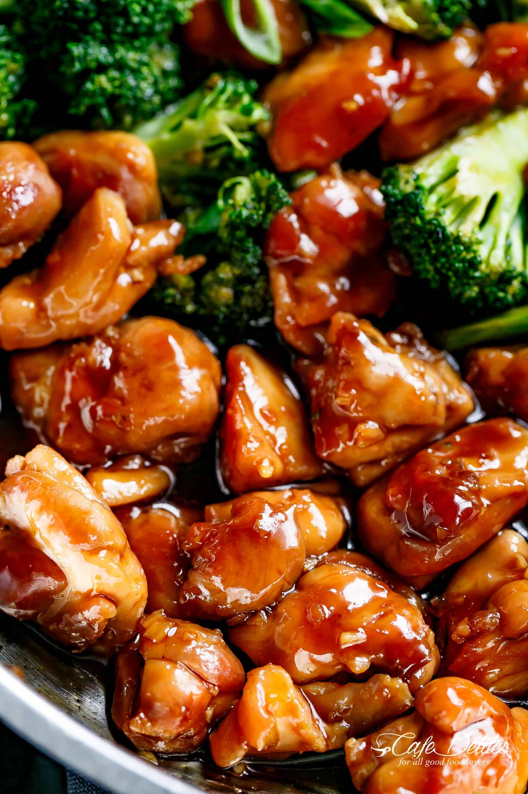

Teriyaki Chicken

Description
Authentic, and delicious, teriyaki chicken. Simple and easy!
Ingredients
- 1 lb boneless, skinless chicken thighs
- 1/4 cup sake
- 1/4 cup soy sauce
- 1/4 cup mirin
- 1/8 cup to 1/4 cup sugar, depending on how sweet you like it
Instructions
- Preheat a skillet over medium heat.
- Mix remaining ingredients together in a bowl, set aside for later
- Add chicken, cook for about 4 minutes, flip, cook for about 4 minutes.
- Add in teriyaki sauce from earlier, turn down heat to low, and let simmer until sauce thickens.
- Serve over rice!